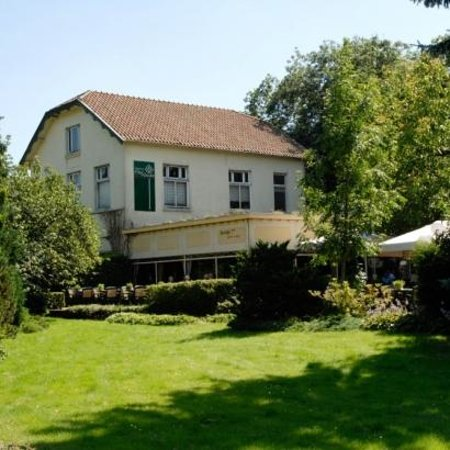
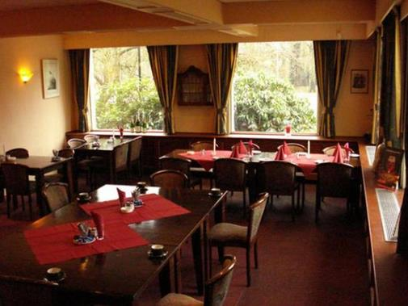
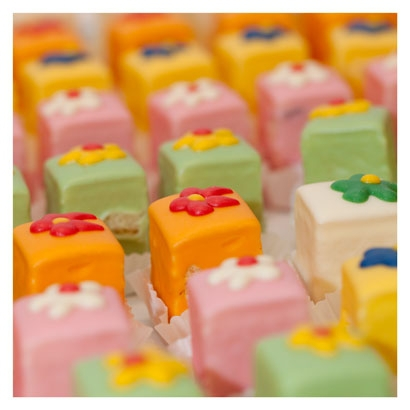

Restaurant
De ultieme plek waar vrijwel alles mogelijk! Zoals lunch, high tea, borrel, een
uitgebreid diner of gourmet menu. Laat u verrassen en verwennen door de optimale
gastvrijheid welke geserveerd wordt.
Geniet van een heerlijke kop koffie met een goed stuk taart tijdens uw lange autorit. Of
bent u op zoek naar een centraal punt om met uw zakelijke relatie af te spreken voor
een goede lunch? Genieten van het wisselende maandmenu welke is samengesteld
aan de hand van seizoensgebonden producten is ook één van de talloze
mogelijkheden.
Het sfeervolle restaurant is geschikt voor kleinere en grotere gezelschappen ( max tot.
100 pers. ) En ook zeer kindvriendelijk. Want ook met onze jonge gasten houden wij
graag rekening. Vraag naar de mogelijkheden.


